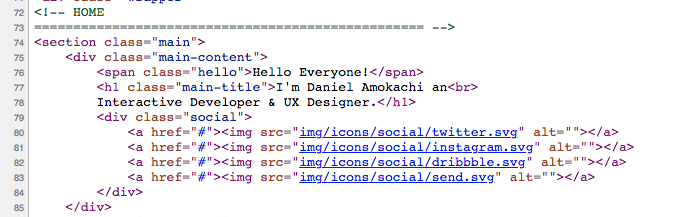
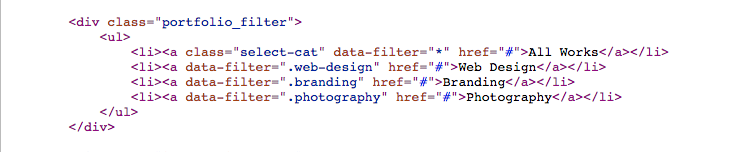
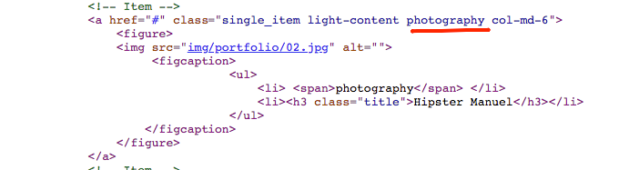
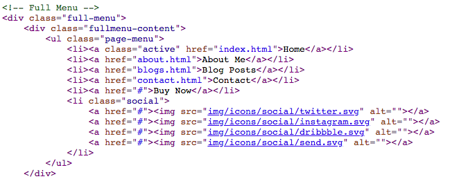
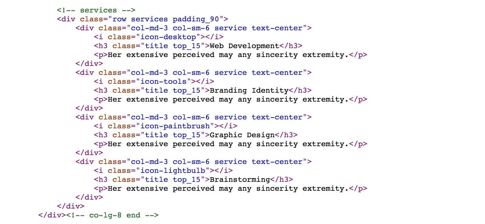
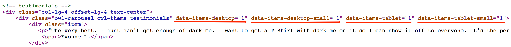

Getting started
First of all, thank you for purchasing the Amokachi One Page portfolio. You can find the detailed information about the template in this document. If there is anything you cannot find in this document, you can send an e-mail via the profile page.
Html Structure
We are used Bootstrap 4 framework in this template. The general template structure is the same throughout the template. Here is the general structure.
Css Structure
The style.css file contains all of the specific stylings for the page. The file is separated into sections using:
JavaScripts
jQuery is a fast, small, and feature-rich JavaScript library.
Home Page
Components and options for laying out your Bootstrap project, including wrapping containers, a powerful grid system, a flexible media object, and responsive utility classes.
Hero Section
Hero Section of home page has social media links and promo text. you can easily change the content.
Portfolio Section
Isotope plugin is used, for Portfolio section. Portfolio section has a filter. In this way you can select which category you want show.
You can change portfolio filters with this section.
Just add your portfolio item, related category class
Header
You can find page header links in full menu section. Just change link of href sections. And links of social medias.
About Page
About page you can give information about yourself or your agency. You can add your services and customer comments.
Services Area
You can use the below link to change the icon you want. Just change name after "icon-"
Et-line Icon
Testimonials Carousel
Testimonial Carousel based on owl carousel plugin. Owl carousel has some settings. You can add following list setting to market area if you need.
- data-dots="true" --> this setting for slider dots, if you change it with false, dots will be remove.
- data-nav="true" --> this setting for slider arrows, if you change it with false, arrows will be remove.
- data-stagepadding="true" --> this setting for slider left and right space, if you change it with false, dots will be remove.
- data-loop="true" --> Infinity loop.if you make it true, when finished it returns to the beginning.
- data-items-desktop="1" --> Specifies how many items will be displayed on desktop-size displays.
- data-items-desktop-small="1" --> Specifies how many items will be displayed on little size desktop displays.
- data-items-tablet="1" --> Specifies how many items will be displayed on tablet-size displays.
- data-items-tablet-small="1" --> Specifies how many items will be displayed on smartphone-size displays. 